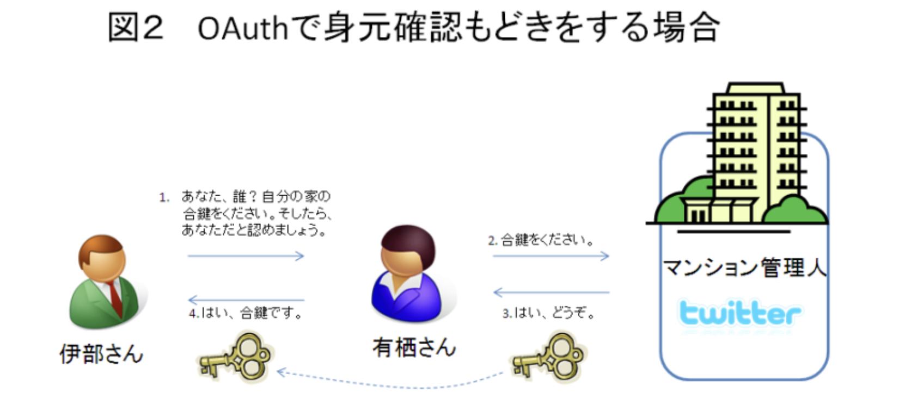
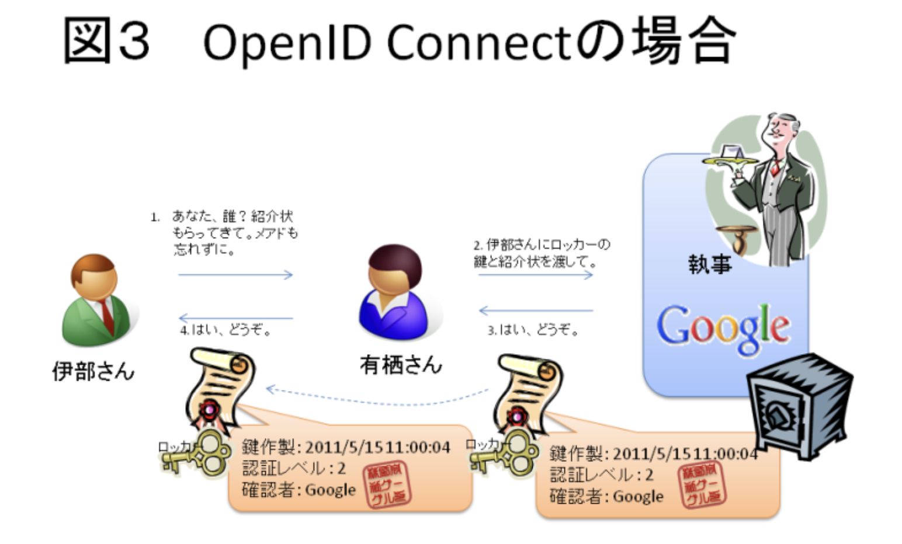

1. 認証認可¶
1.1. 認証とは¶
あなたが何者かを問うこと。 なりすましされないように、以下の情報などで本人確認をする。
What You Are：生体認証とか
What You Have：トークンとか
What You Know：ID/Passwordとか
1.2. 認可とは¶
機能を利用することができる鍵を渡すこと。 認可だけでは、誰に鍵を渡すかは意識していない。
1.3. マイクロサービスアーキテクチャにおける認証認可¶
認証認可のサーバーで認証をすることで、TOKENを受け取って、 バックエンド機能に問い合わせをしていくのが基本の動き。 認証情報に紐づいて、与えるTokenの権限を制御することで、提供するサービスを制御する。
1.4. OAuth2.0¶
1.5. OpenIDConnect¶
1.6. SAML¶
1.7. Cognito¶
1.7.1. マイクロサービスの認証認可・OAuthからOIDCの流れ¶
これまでの認証認可のアーキテクチャでは一つのサービスで認証した情報をセッションで持って、その情報で認可制御をしていた。 マイクロサービスアーキテクチャでは、複数のサービスが強調して動作するので、認証認可のプロセスが煩雑になる。
そこで、認証認可をサーバーから切り離して、認証情報や認可情報をAPIサーバー間でやりとりすることで管理を容易にしたい。 認可情報をやりとりするためのプロトコルをAPIサーバー・エンドユーザー・認可プロバイダーで決めておく必要があり、それがOAuth
Oauthは認可の仕組みに過ぎず、認証の仕組みが仕様になっていない。 そのため、トークンの横取りで攻撃されてしまうという問題があった。
この問題に対応したのがOIDC。 OIDCは、OAuthの認可に加えて「ID Token」という検証可能なトークンを利用 ID Tokenは「JWT(Json Web Token)」という改ざん耐性のある仕組みを採用。
OIDCを提供するOSSとしては、keycloakなどがある
1.7.2. JWTとかID Tokenって何¶
1.7.2.1. JWT¶
JSON形式で表現されたクレームの集合を署名(+暗号化）したもの。 任意のJSONデータを格納できるURLセーフな文字列とも表現できる。
中身には以下の３つのデータがあり、ピリオドで区切られている。
ヘッダー：トークンの形式や署名のバージョン
クレーム：OIDCではここに認証情報を記述
署名：正しい発行者が発行したID Tokenである証跡
Googleから発行されたJWTのクレームを見てみると以下の情報が入っている
iss (ISSuer)：トークンの発行者
aud (AUDience)：トークンの受け手
exp (EXPiration)：有効期限 これらをサーバー側で検証することによって、「正しい発行者が」「自サイト向けに」「１時間以内に認証して発行された（Googleの場合）」IDトークン以外は受け付けないようにできます。
1.7.2.2. ID Token¶
JWTの一種で、 JWTよりも強い制限があって、 署名が必要で、暗号化は必須ではない。暗号化するなら、署名してから、暗号化する。
ID Tokenのクレームとしては、以下の内容が含まれる
エンドユーザーの認証に関わるもの
エンドユーザーの属性に関わるもの
1.7.2.3. Access Token¶
これは、JWTとは限らない点に注意
1.7.3. OAuth2.0¶
HTTP上で、認可を行うための仕様で、アクセストークンを発行する手順を定めた技術仕様
正確にに書くと
OAuth 2.0 とは、サービスのユーザーが、サービス上にホストされている自分のデータへのアクセスを、自分のクレデンシャルズ (ID & パスワード) を渡すことなく、第三者のアプリケーションに許可するためのフレームワークである。
具体例で書くと
あるサイトAの機能（FaceBookの写真投稿）を、サイトB（Instagram）から実行するために、 ユーザーがサイトBに許可を与えて、サイトAにアクセスすることを認めること。
ユーザーがサイトBでサイトAについて認可すると、サイトBの認可チケットをサイトAへわたす。 そうすると、サイトAにサイトBの認証情報をおかないで、サイトAへ認可することができる。

OAuthが流行っている理由
パスワードをサードパーティのアプリに渡すことなくAPIを利用できる
どのリソースにアクセス可能かを細かくユーザーに認可させることができる
OAuth2.0の認可サーバーは2つのエンドポイントを提供している
OAuthのフローによって、利用するエンドポイントが異なるが、認可コードの場合は、両方利用する
認可エンドポイント
トークンエンドポイント
1.7.3.1. トークンの発行フロー¶
Authorization Code GrantとImplicit Grantの２つがある。
HTTPのリクエストでどちらを利用するかを指定することができる

1.7.3.1.2. Implicit Grant¶
一番の違いはImplicit GrandはサイトAのTokenを一度ユーザーに渡す点

1.7.4. OAuth認証¶
OAuthを使って、認証までしてしまおうという考え。 本来OAuthは認証ではなくて認可の使用なので、間違って使うと脆弱性が生まれる。 A君のロッカーを開ける鍵持っているということは、ちゃんとA君だよという認証してきたってことだよね。 よしよし君はAだなという認証をしちゃう

本来認証ではない行為を使って認証をしている。マンションの合鍵を持ってきて、本人確認をする。 OAuth Server（Twitter）とかで悪さすることができるので、合鍵をばら撒くのは好ましくない・・・

セキュリティ的なレベルの低さはあったが、手軽さのおかげで普及した
1.7.4.1. セキュリティホール¶
いつ」「どこで」「なんのために」作られたのか分からないいつ」「どこで」「なんのために」作られたのか分からない セキュリティホールは、 access_tokenをUserAgentに渡すということは、UAはaccess_tokenを使いまわせる点にある。 サイトAが悪役で、渡したTokenが盗まれたとすると、そのTokenを使うことで、認証せずに、サイトBがAのふりをできる。


1.7.5. OpenID¶
IDトークンを発行する手順を定めた技術しよう
OAuth2.0に加えて、ID TOkenの受け渡しを追加したフローで、認証まできちんとやって処理をする。
異なるWebサービス間でユーザーの認証情報を受け渡す方法
認証：紹介状を使って本人確認をしているイメージ 紹介状はIdentity Provider（Googleとか）に書いてもらう

登場人物は３人
EndUser
OpenID Provider(ユーザー認証を行う)
Relying Party（ユーザーの許可のもと、OPから認証情報をもらう）
1.7.6. OpenID Connect¶
認証の仕様
上記のOAuthの課題観を解決するためにOpenID Connctを開発。 OAuthとOpenIDを組み合わせて、認証を提供する OIDCで払い出されるIDトークンは偽造不可能な名前付きの合鍵。 「いつ」「どこで」「なんのために」発行されたトークンなのかの情報を含んでおり、かつ署名されているため改ざんができない
基本アイデアはOAuthで渡す鍵を紹介状が入っているロッカーの鍵にすること このロッカーを「UserInfo （ユーザ情報）Endpoint」と呼ぶ 紹介状の中には、どのような認証をしたのかというメタ情報もある。この紹介状のことを、OpenIDトークンと呼ぶ

全体の流れとしては、認可エンドポイントで認可コードが発行され、コードをトークンエンドポイントに持っていくとアクセストークンとIDトークンが発行される
1.8. Cognito¶
アプリケーションの認証認可を行うサービスで、アカウント管理と認可の付与をフルマネージドでサポート
1.8.1. ユーザープール¶
Cognitoユーザーの管理→認証
1.8.2. IDプール¶
ユーザープールのアカウントに対して、IAMロールを付与する→認可
1.9. 参考¶
1.10. 塾長レクチャー¶
1.10.1. 概要¶
Oauth1.0は難しすぎて、流行らなかったので2010年初頭におしまいになった。
OAuth2.0は認可サービス 認証は済んだことは前提として、何をすることができるかという権限を与えるかという仕様 簡単にいうと、AccessTokenを配る。Access Tokenを持っているからといって、認証に使うのは危険 今のマイクロサービスでは当然のように使われている。
OAuthを認証に使おうとすると、セキュリティホールを使うので注意！
その対策がOIDC！OAuthを拡張して、認証までくっつけた。
1.10.2. フロー¶
基本的には認可コードグラントフローを押さえておけばOK
インプリシットグラントフローはセキュリティ的に問題がある。
1.10.2.1. 登場人物¶
以下の登場人物を明確に把握しておく。リソースオーナーとクライアントAPを混合しないこと
リソースオーナ→人間
認可サーバー（Authorization Server）→ Access Tokenを発行する
クライアントAP→ブラウザとかApp
リソースサーバー→マイクロサービス（Access Tokenに従ってサービスを公開する）
1.10.2.2. 認可コードグラントフロー¶
やりたいこと クライアントAPからリソースサーバーにアクセスしたい！けどAccess Tokenがないから認可サーバーに問い合わせをするストーリー
OAuthの特徴は、ユーザーのクレデンシャル（ID／PASS）を渡さずにAccessTokenを渡したいこと。 そのために認可サーバーがいる。
モバイルを使っているケースで、セキュリティホールが存在して、その対策がPKCEがある。 セキュリティホール：モバイルアプリだと、認可コードごと盗んでしまう。
AccessToken側でも、スコープを定めておくことが対策になる（魔法の鍵・盗賊の鍵・最後の鍵）
1.10.2.3. インプリシットグラントフロー¶
違いは認可コードが発行されないのが特徴 悪意がある人にAccessTokenが渡されちゃう
悪意のある人はクライアントAPが悪い人だとすると、奪ったAccessToken（合鍵）を使っていろんなサービスにアクセスしちゃう
1.10.3. OIDC¶
OIDC = OAuth + Identity Layer
OAuthは誰向けに発行されたのかということに無頓着な合鍵 OIDCは、誰に向けて発行したものなのかまでくっつけている（ID TokenとUserInfo Endpoint)
1.10.4. Cognito¶
自分自身がユーザープールとして、ID/Passを持つこともできる 外側のIDプロバイダーに認証を任せても良い。